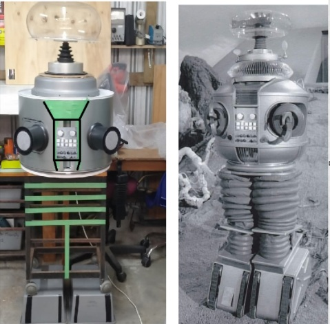

Movie and TV props to engage STEM learners
Michael Fenton is a scientist... he could not have been anything else.
Re-runs of Sci-Fi shows from the 60's and 70’s portrayed scientists as handsome heroes. They were fit, athletic, and knew how to save beautiful monsters from ravenous maidens! Science was cool, immensely exciting and called upon the cunning and creativity of its heroes to save the situation. These hereos could travel to the bottom of the sea or the far reachers of space... outdoors was where the science was! Oh, and the wonders you can do with your science knowledge; you could build fantastic machines, like the Thunderbirds, or the the Seaview submarine, or the Jupiter 2 spaceship!
Michael always thought the B9 robot was a clever way to design a multi-purpose transportable science lab. And it also made a great companion, warning of danger, monitoring the environment and playing music! He wanted one of his own.
As an adult, Michael came to Secondary teaching with research and industry experience. School science equipment is limited, with expensive data loggers and sensors reserved for senior classes and limited to specialist subject use. This means that junior general science classes are unlikely to access tools that could transform their learning and view of the world. Maybe a B9 Environmental Control robot could fill the gap? Even better, explore the art and creativity overlooked in traditional science teaching.
Key ideas
- Michael uses the design and construction of movie props to engage learners in hands-on holistic maths and science lessons that stimulate creativity and imagination. This pedagogy permits cross-curricular learning at all levels and abilities.
- The mobile science lab, Lost in Space robot B9, is a child-friendly build, NOT an expensive 'hands-off' studio accurate replica. It is intended more will be made by school students of all ages. It is supposed to be touched and played with. It is low-cost, made from recycled parts, and built from inexpensive off-the-shelf components.
- Microcontrollers used in schools, such as Picaxe, Microbit, and ESP32 are coded using the typical examples publically available for connecting sensors to any of these.
- All circuits are modular and run on 5 volts or 4.5V 3xAA battery packs. This is a safe voltage for school learners to work with at desks in science, maths, art, music or other classes.
- B9 is designed to be a fully mobile science laboratory, a companion, and a MP3 player.
- B9 has an inexpensive and simple offline AI voice recognition system. He has a GPS navigation system and multiple sensors, all data is shared to phones, laptops or tablets. B9 is compatible with Michael Fenton's RIGEL system. A class set of digital multimeters for outdoors field work is stored in a compartment in his legs.
- B9 has the ability to upload a different personality, such as the Sirius Cybernetics Corporation Genuine People Personality that is Marvin.
- Michael invented the "Build it, Test it, Use it" pedagogy for inquiry-based learning and discovery at home as well as school.
- He promoted affordable, inquiry-driven cross-curricula learning sharing his research at conferences, through publications, and on his Nexus Research Group website.
Build it
"I'm not into science or maths, I'm a creative".
It's the myth that you are EITHER an academic OR an artist. In all areas of education that I have worked (teaching, leading education, or mentoring educators) myths abound.
A study (2025) from the University of South Australia confirms (again) that creativity plays an essential role in academic success, suggesting students who think outside the box are more likely to excel in literacy and numeracy assessments. The study challenges the stereotype that creativity and academic achievement are at odds, a long-held misconception according to UniSA researcher Professor David Cropley.
And now for the art involved with robotics. B9 is a functional mobile science lab - so how will I know where it is, what it's sensing and the historical trends in the environment it is monitoring?
Answer: Design a web page that is served to nearby phones, tables or laptops that looks nice, uncomplicated, and includes a logo of some kind. And here it is, with graphs, a SVG image, and a simple colour palette.
The page is portrait, split in half, side by side in the image above. The robot requires a soundscape (special effects noises), lighting effects, and a personality. A personality type wil affect the speed of body movements, the humour setting, the voice tone and speed.
All this is more than just coding and being an electronics technician! Even designing the circuits and placing the wiring as about "looking good" as much as being functional.
And there are many "right" ways this can be done. To understand the world takes imagining all the weird and wonderful ways things can happen. Science has methods, and continues to invent new ones, to test these imaginings.
"'Build it' Surely that HAS to be creative? It HAS to require imagination and emotions. I can be both a scientist AND a creative!
Test it
Testing and modification, then re-testing is part of the learning here. Failure is a valuable learning experience. There is more than one 'right' way to solve problems, for example, designing the code or circuit for a lighting effect.
This is visible in the way the belly lights are made to flash. There are many ways this could have been accomplished. Changing things to get the 'right look' and functions is seen in the video clip below. This older version of the B9 robot voice and torso lights circuit runs on a 5V phone charger. This has been upgraded to include an offline AI voice recognition module. You can see a Picaxe 14M2 controls two MP3 players. This has been upgraded to using a ESP32 which also does some other things.
The video demonstrates that part of the creation process is to test where to position parts, how large they should be, and what kind of 'look and feel' they should have. For example, the 'brain' bubble in this video is too small. It cost about $20NZD for a larger acrylic fish bowl.
The bubble contains all the weather, navigation and communication modules, all 5V circuits. How should they be mounted so they don't overheat in sunlight? How does the metallic body interfere with the compass module? What gear ratio is needed to rotate the torso slowly?
Does the robot look, sound and feel right?
The top section can be removed from the lower legs section, and secured in the back seat of a car and STILL operate. How cool is that! Just like the Robinson robot secured at the back of their space chariot. There is lots of everyday maths and science here but also imagination, creativity, and emotion.
Designing the voice and then recording the appropriate phrases requires all three. What kind of personality will your own robot have when it responds? For comparison, listen to the B9 voice test, and compare this to the Marvin voice test. How do these compare to the ORIGINAL robot voice (done by Dick Tufield)?
"'Test it' Are the materials used strong enough? How will you test these before using them? How do the sensors work AND where will you put them so they look good AND give accurate readings? What units of measurement to you want B9 to use? How will B9 speak these to you - in a friendly, sad or neutral tone? How will you code the front buttons to play Simon Says? What colours should B9 be?
YouTube videos
Michael has documented other props from TV and movies to inspire and engage learners in inquiry-driven cross-curricula learning. Students discover that science and technology are interdependent and intertwined. Improvements in one rely on improvements in the other. This takes creativity, imagination, and an appreciation of the beauty and wonder of the way the world works.
And they are lots of fun to play with! Anyone for a career at Richard Taylor's Weta Workshop?